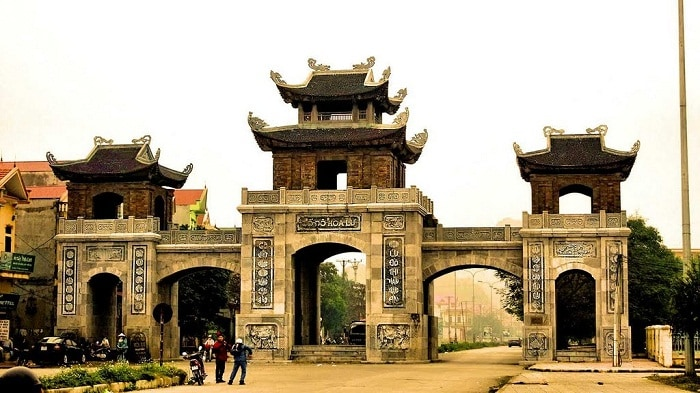

華魯古都
-
華閭古都（中文：華閭）是越南在968年至1010年間的首都。它是越南中央集權封建國家的第一個首都，也是民族英雄丁寶靈的故鄉。[1]
華魯首都存在了42年，與三個連續朝代——定朝、天黎朝和黎朝——的歷史歷史密切相關：
統一國家、對抗宋朝——鎮壓謙，並探索河內首都的建立過程。1010年，李泰王將首都從和祿（寧平）遷至河內的塘隆，和魯成為古代首都。之後的呂、陳、黎和阮朝雖然不再以和廬為基地，但仍在此修繕並建造了許多建築作品，如寺廟、陵墓、公社住宅、寶塔和宮殿,...[2]
目前，華祿古都在寧平省的長安世界遺產群中仍保存有許多文物。
-
關於和魯古都的詳細資訊：
-
歷史：968年，丁寶靈鎮壓了十二使節的叛亂，登上皇帝（丁天黃）的寶座，將國家命名為大高越，並選擇和祿為首都。它作為政治中心長達42年（968–1010年），直到李孔安將首都遷至上隆。
-
地點與建築：
-
地點：距離寧平約7公里，屬於Trang An聯合國教科文組織世界遺產綜合體。
- 寺廟：最著名的是丁天黃王廟和黎大興王廟，建於舊宮殿基礎上，擁有精美的石雕建築。
-
寺廟：最著名的是丁天黃王廟和黎大興王廟，建於舊宮殿基礎上，擁有精美的石雕建築。
-
時間：3月至5月（乾季，陽光明媚）或5月底（稻季）。
-
節慶：Truong Yen 節（和魯古都節）每年農曆第三月8日至10日舉行，以紀念國王。

